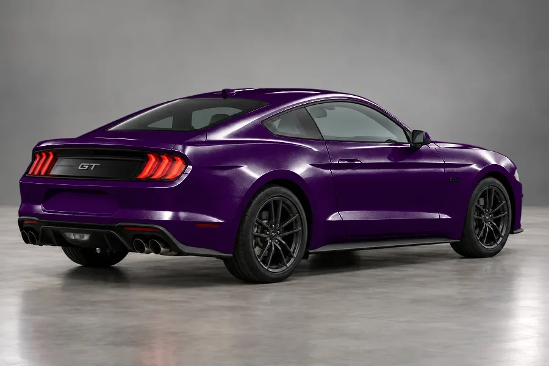
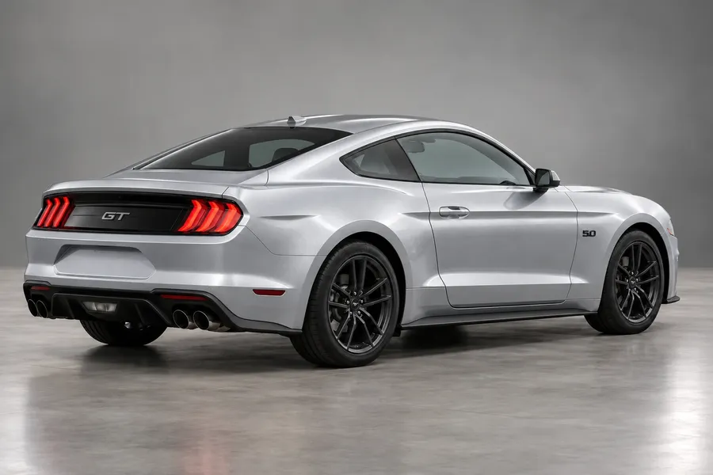

Website case study · Hemet, CA
Elev8 Autostyling
I built a wrap and tint site that helps shoppers see a finish on a vehicle before deciding what to ask the shop for.
Try the wrap comparison
Choose a finish for the Ford Mustang, then drag the slider to compare it with the original.


Midnight Purple Gloss
Rendered color previews are approximate. Lighting and the actual film affect how a wrap looks in person.
From preview to quote
On the live site, shoppers can select a vehicle and finish in the wrap studio. Their selections are carried into a quote request so the shop knows what look they have in mind.